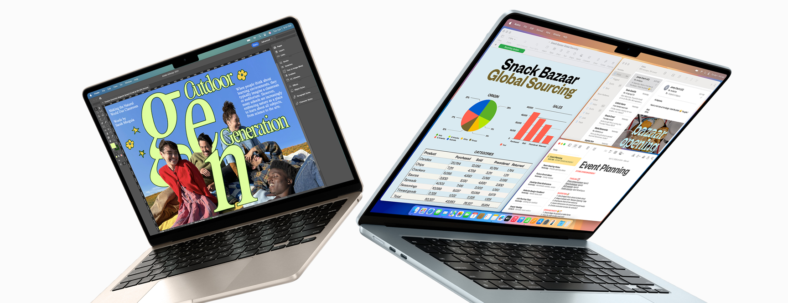
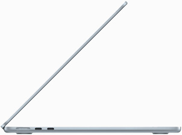
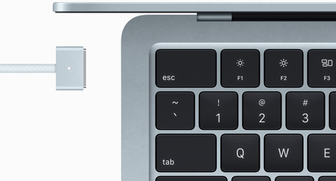
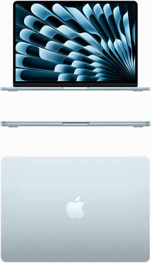

Design
Leve pelo caminho

Super leve e com um pouco mais de 1cm de espessura, o Macbook Air se encaixa facilmente na rtoina da sua rotina e na sua mochila. O modelo M4 é feito com mais de 50% de materiais reciclados e o aluminio da estrutura resistente também é reciclado.
Tela de 13 Pol.
Tela de 15 Pol.



Nova Cor. Tudo Azul São quatro cores divinas para você escolher. Uma delas é a nova azul-céu. E todos os modelos de Macbook Air vêm com um cabo MagSafe na mesma cor.